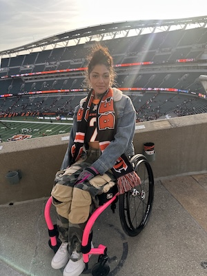

</head>
<body>
  
</body>
</html>

<link rel="stylesheet" href="main.css">
<nav>
  
       <a href="index.html">Home</a>
        <a href="aboutme.html">About Me</a>
        <a href="sportsevents.html">Sports Events</a>
        <a href="mystory.html">My Story</a>
        <a href="contact.html">Contact</a>
        
      </nav>
<h1>Who is Mikiahya Greene?</h1>


<p>My name is Mikiahya Greene, I am 23 years old and I am a second year communications student at the University of Cincinnati. My major is communications and my end goal is to become a public speaker where I can do different advocacy work. I am an online student, however I am also a student athlete. I am a member of the <strong>UC Adaptive Athletics</strong> program where I participate in paran track and field. I have been an athlete most of my life and have always been very active. I began adaptive athletics almost three years ago after I had a spinal cord injury. </p>

<br>

<p>I became a paraplegic June 22, 2023 after I was shot due to gun violence and domestic violence. Prior to my injury I had worked in healthcare, but I wasn't very familiar with the "disability community." In the beginning it was really difficult navigating the world with a new disability, however I had a lot of mental strength and a great support system that helped me keep strong during that time. I am what's known as a T4 <abbr title="Spinal Cord Injury">SCI</abbr> which means that I'm paralyzed from the chest down and wheelchair bound. My injury has introduced me to the world of adaptive athletics, and that has helped me find myself in a new way. I have been able to meet so many amazing people and try sports I had never thought of trying before thanks to my injury. </p>


